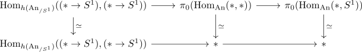

homotopy category of the slice category is not the slice category of the homotopy category
Proposition
Let $\mathcal{C}$ be a category and $X$ in $\mathcal{C}$ an object. Then the homotopy category of the slice category $\mathrm{ho}(\mathcal{C}_{/x})$ is in general not equivalent to the slice category of the homotopy category.
Proof
Consider $\mathrm{An}_{/S^1}$. Then the fiber sequence of Hom animae in the slice category shows that there exists a fiber
This shows that $\pi_0(\mathrm{Hom}_{\mathrm{An}_{/S^1}}((* \rightarrow S^1), (* \rightarrow S^1))) \simeq \Omega S^1 \simeq \mathbb{Z}$.
But in the homotopy category, we have a fiber sequence of sets
